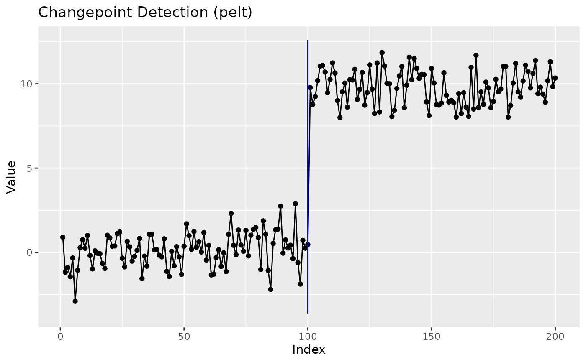

Runs one or more changepoint detection methods on a sequence and returns
a tidy ggcpt result object. This is the recommended entry point
for most users.
Arguments
- x
A numeric vector (the data series).
- method
Detection method. One of
"pelt","binseg","segneigh","amoc","fpop","wbs","wbs2","not","mosum","idetect","tguh","smuce","hsmuce","np","ecp","kcp","cpm","robust","decafs","sn","inspect","sbs","bcp","bocpd","strucchange","segmented". Defaults to"pelt".- change_in
What to detect change in. One of
"mean","var","meanvar","slope","distribution". Defaults to"mean".- penalty
Penalty type or value. Either a character string (
"MBIC","BIC","AIC","Hannan-Quinn") or a numeric penalty value. Defaults to"MBIC". Numeric penalties are honoured by the functional-pruning method (fpop); thechangepoint-based methods expect one of the character options.- ...
Additional arguments passed to the specific wrapper.
Examples
set.seed(2022)
x <- c(rnorm(100, 0, 1), rnorm(100, 10, 1))
result <- cpt_detect(x, method = "pelt", change_in = "mean")
result
#> ggcpt (changepoint detection result)
#> Method: pelt
#> Change in: mean
#> Changepoints found: 1
#> CP convention: left
#> Penalty: MBIC = NA
#> Series length: 200
#>
#> Changepoints:
#> # A tibble: 1 × 2
#> cp cp_value
#> <int> <dbl>
#> 1 100 0.467
ggplot2::autoplot(result)
